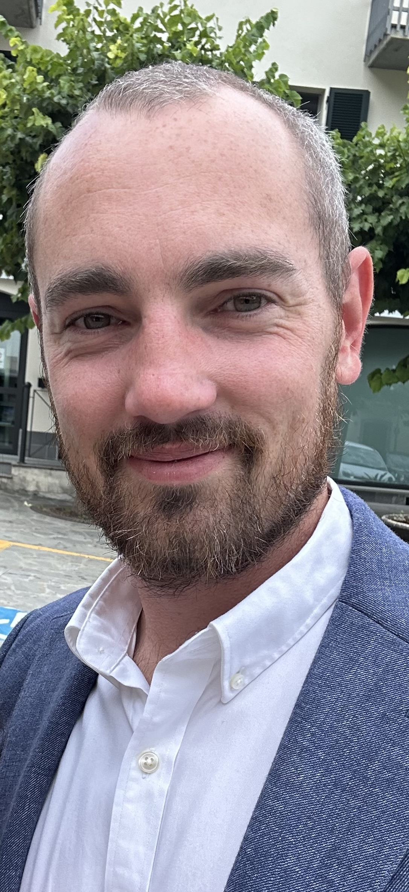

CIMA-qualified commercial and technology leader. Founder of Vernwell Ltd.

Founder & Principal Consultant, Vernwell Ltd
Malvern, Worcestershire
Vernwell is a flexible consultancy founded to bridge the gap between commercial strategy and technical execution — the space where most business problems actually live.
James is a CIMA-qualified commercial and technology leader with over 15 years of experience working at the intersection of finance, IT, and business operations. His background combines the financial rigour of a qualified management accountant with the hands-on technical depth of someone who has built and run data infrastructure in a fast-moving commercial environment.
Vernwell operates on a flexible basis — project work, day rate, or retained support, depending on what the client actually needs. There is no minimum engagement size and no overhead-heavy team: you work with James directly, which means decisions get made quickly and work gets done without layers of account management in the way.
The approach is commercial first. Technology and data are means, not ends — the question is always what decision or outcome the business is trying to support, and the work is designed around that.
Vernwell is based in Malvern, Worcestershire, and works with clients across the Midlands and London. The majority of work is conducted remotely, with on-site visits where the engagement or the client requires it.